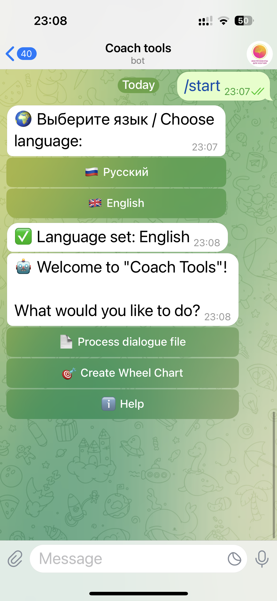
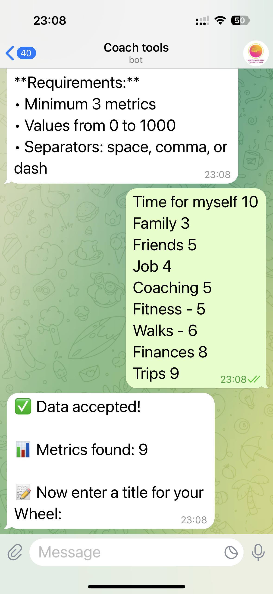
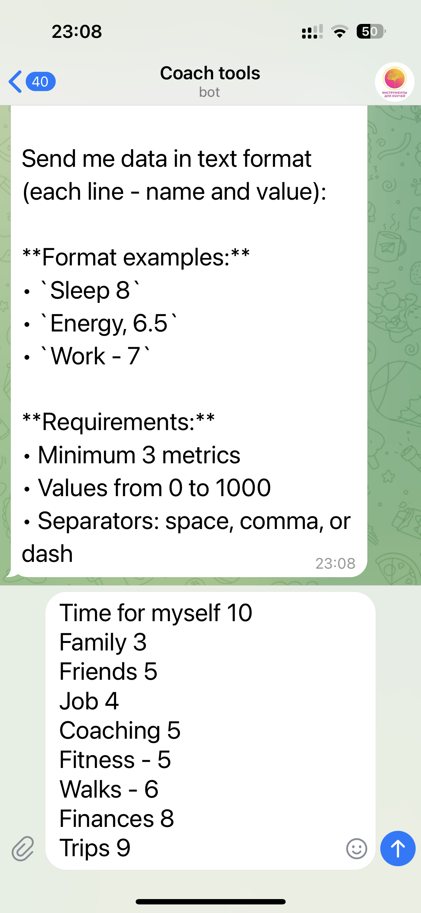
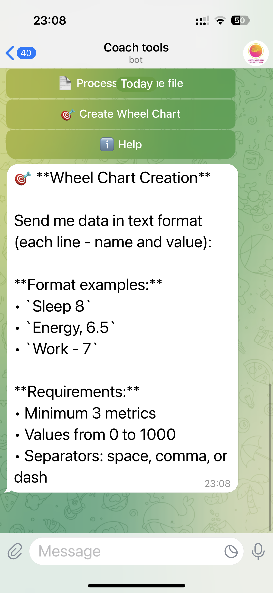
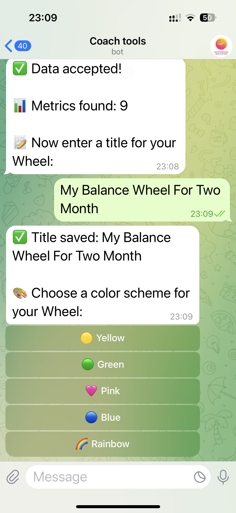
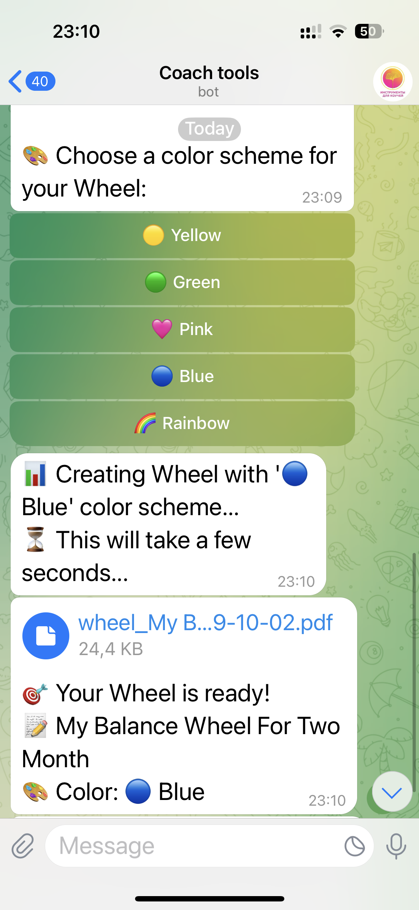
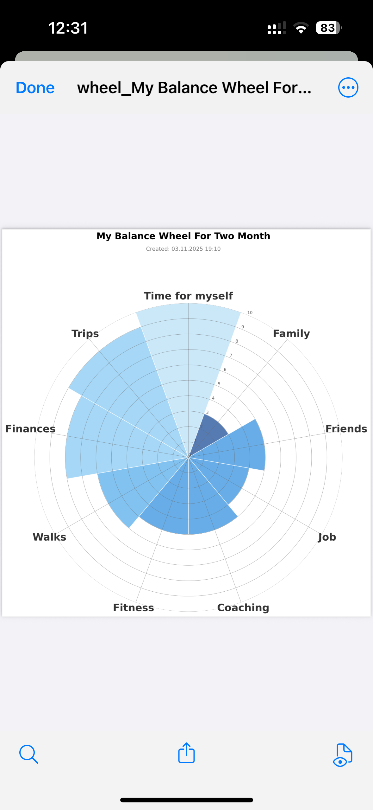

1️⃣ Start
Type /start to begin.
The bot will greet you and ask to choose a language. Select English 🇬🇧.
2️⃣ Main menu
After selecting the language, you’ll see the main menu. Click 🎯 Create Wheel Chart.
3️⃣ Send your metrics
Send your data in text format — each line should include a name and a value (from 0 to 10).
Examples:
Sleep 8
Energy, 6.5
Work - 7
Energy, 6.5
Work - 7
Minimum 3 metrics. Separators: space, comma, or dash.


4️⃣ Enter a title
After your data is accepted, the bot will ask you to enter a title for your Wheel.
Example: My Balance Wheel For Two Month
5️⃣ Choose a color
Select a color scheme for your Wheel: 💛 Yellow, 💚 Green, 💗 Pink, 💙 Blue, or 🌈 Rainbow.
5️⃣ Choose a color
7️ Get your PDF
The bot will create your Wheel and send a PDF file you can download or share with your client.
 💖 Support the project
You can support the “Coach Tools” project by sending a small donation directly in the bot — 100 ₽, 200 ₽, 300 ₽ or any amount.